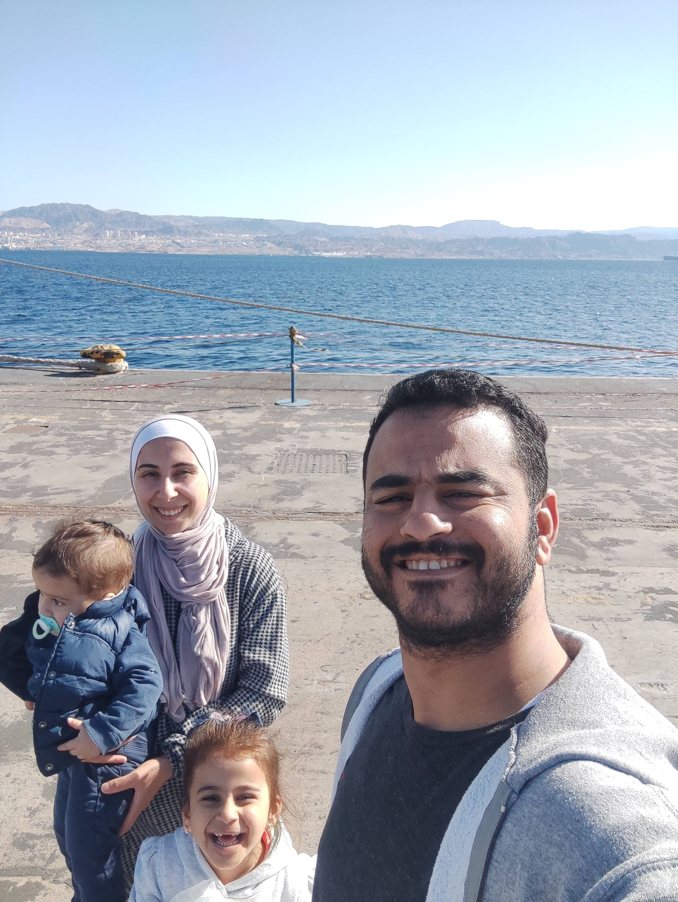

Who We Are
Our Story
Welcome to Aqaba local experiences! We are a family-run initiative in the heart of Aqaba, dedicated to sharing the warmth, flavors, and traditions of Jordanian hospitality. Our journey began with a simple idea: to open our home and hearts to travelers seeking genuine connections and unforgettable memories.
What We Offer
From hands-on cooking classes to immersive walking tours and cozy dining experiences, every activity is designed to bring you closer to our culture and community. We believe food is the gateway to understanding a place, and every meal is a story waiting to be shared.
Meet Suhaila
Suhaila, our founder, is passionate about preserving local recipes and traditions. With her family, she welcomes guests as friends, ensuring every visit is filled with laughter, learning, and delicious food.